Creating Digital Tools for a Diverse Audience: Current Events Teaching Resources (Facing History and Ourselves)
Process
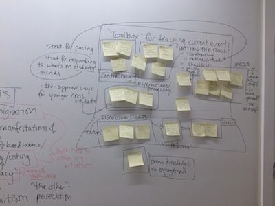 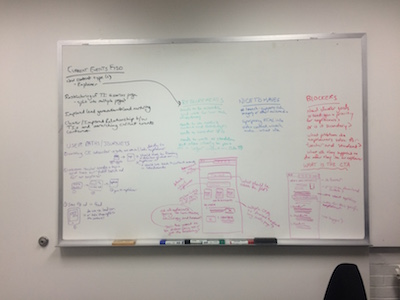 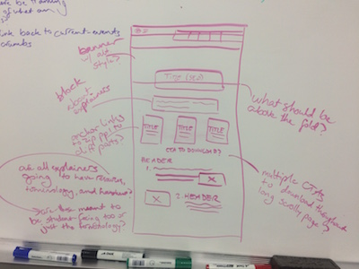I am part of the Current Events team at Facing History and Ourselves, a nonprofit focused on providing materials and training for middle and high school teachers. The Current events team produces biweekly current events teaching materials and content for middle and high school educators to use with their students.
I have been involved with the project since it began in 2018, collaborating with our Marketing and Program teams and acting as the Current Events team's digital lead. Before our Current Events page launched, I researched existing teaching resources available on the web and also organized a survey to existing educators in our network. We received 300 responses which helped inform how we decided to structure our current events content. Working on the project has allowed me the opportunity to test new content types on the organization's website and to co-create resources with colleagues who bring a wide range of expertise.
Since the launch of Facing History's Current Events page in 2018, I've continued working on the project team by providing regular updates on how the content performs, building new content, maintaining existing pieces, and brainstorming new ways to reach a wider range of educators.
Clippers Long Hill Salon: Site Redesign
Before

The previous version of the site had only basic contact information, no photos or examples of the salon's work, and almost no interactivity for visitors viewing the page. The only item that was clickable was the small facebook icon underneath the address and contact info.
After


The business owner already had an existing color scheme and design used in her print collateral and sought a site that remained consistent with her print ads as well as her salon atmosphere.
Before meeting with the business owner I created some basic sketches and mockups in order to show my recommendations for the updated architecture for her site, and to give her a visual with which to provide feedback on.


Based on that feedback, I edited multiple iterations before relaunching the site to the public. The final product implemented HTML, CSS, and several jQuery plugins and allowed the end-user to access sample photos of the salon stylists' work as well as general information about the salon's services and staff.
Consulting and Tutorial Work:
Migrating a Site to Squarespace and Streamlining Content
One of my clients placed a high priority on to easily make updates to her new site herself and had not previously maintained a website in any capacity. After consulting with her to determine how to best represent her content in a user-friendly manner, I migrated her previous hard-coded site to Squarespace CMS and then scheduled several tutorials with her covering basic tips for using Squarespace.
She was thrilled and empowered to have a new mobile-friendly site which she could easily update herself.
Before
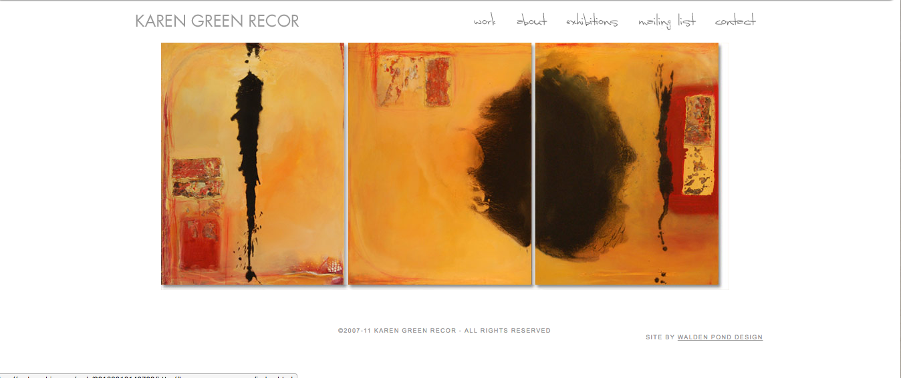 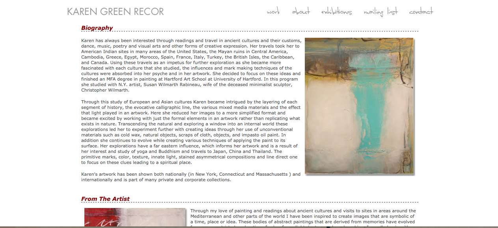After
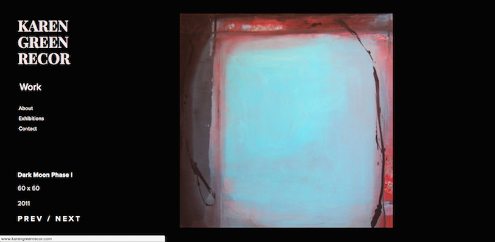 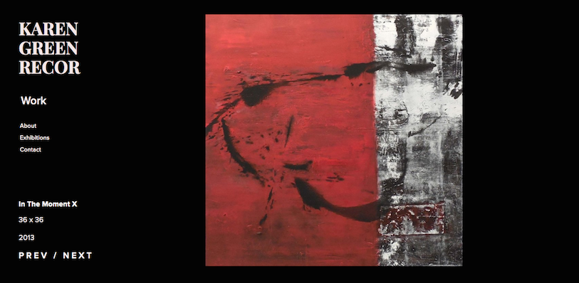 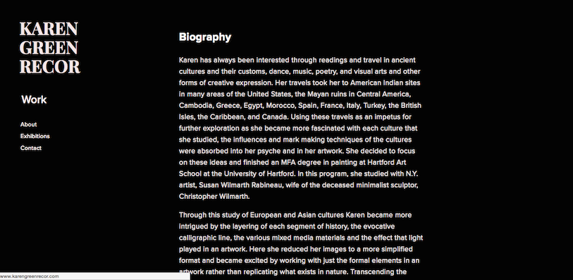 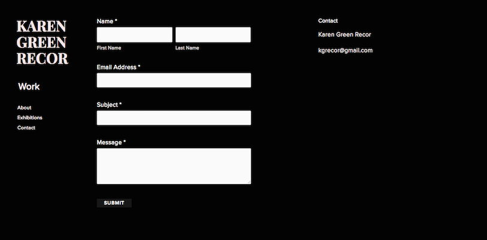Prints by Lolo
In 2019 I began designing home and office decor prints as a creative outlet. They are available for instant download at my Etsy shop, Prints by Lolo.
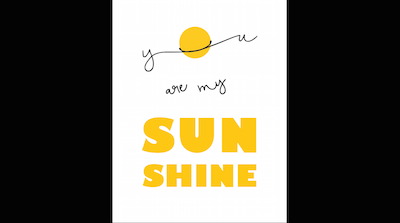 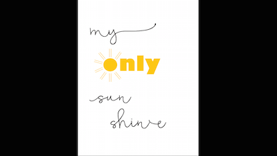 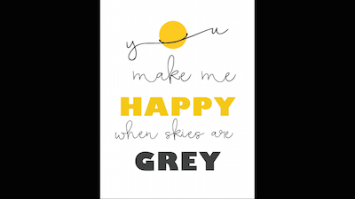 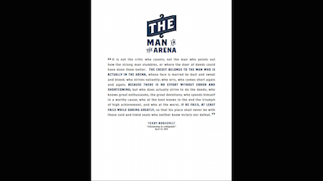 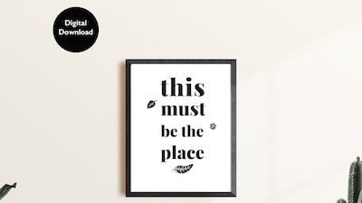 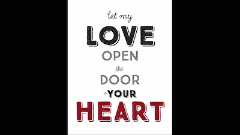
Visual Design: Book Cover Design Project
For a course in graphic and print design I created 3 different book cover ideas focusing on varied typographic treatments. The book cover was based on a sci-fi short story by Steven Millhauser entitled "Invasion From Outer Space". Below are some of the initial basic colored pencil sketches, a digital prototype created in Illustrator, and photos of the printed final product.